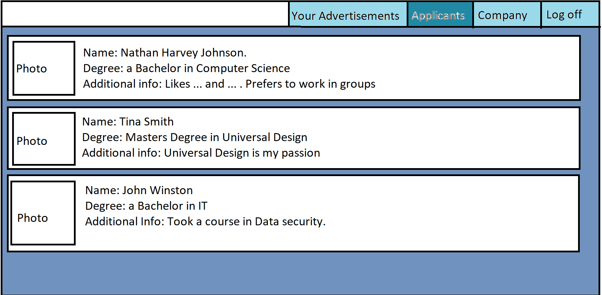

Our Solution to this problem is «Placeholder»TM. A social media platform for graduate student to get out onto the job market and get some of that much needed experience which eases their journey to the dream job longer down the road. The webpage will be separates into two different pages depending on if you are a company looking for employees or a graduate looking to get employed.
The graduates will look at a page like this, where they will a couple options. First off is the profile page where you can, like pages such as Facebook and Twitter, configure your profile by adding information about yourself and your degrees, put in what you would like to work with/ work as and also put in various companies which you could be interested. we envision it will look like this:
Secondly there is the Companies page where different employers from various companies will post their job ads so that graduates can apply for said jobs which fits their education. This page will be tailored to the individual by using the information they provided in their profile by excluding the jobs which has jobs far outside their field of expertise. You can further narrow the selection by utilizing the window on the left hand side of the window where you can search for specific positions and choose to include only part time or full time jobs. We envision it will look like this:
